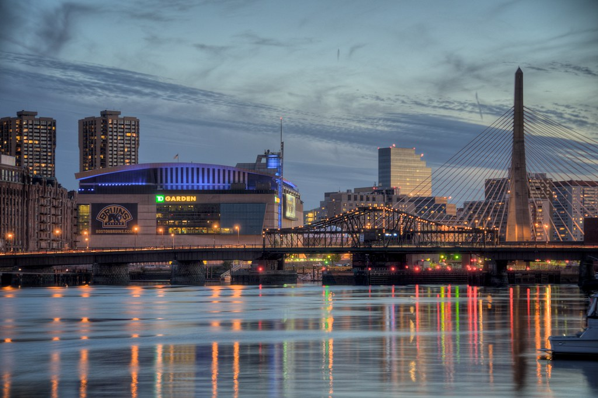

Facts About the Team
- The Boston Celtics are a professional NBA basketball team.
- The team was founded in 1946.
- The Celtics play at TD Garden in Boston.
- The team colors are green, white, and black.
- The Celtics are one of the most successful teams in NBA history.
Pictures


Jeff Nyveen/h1 alt="TD Garden